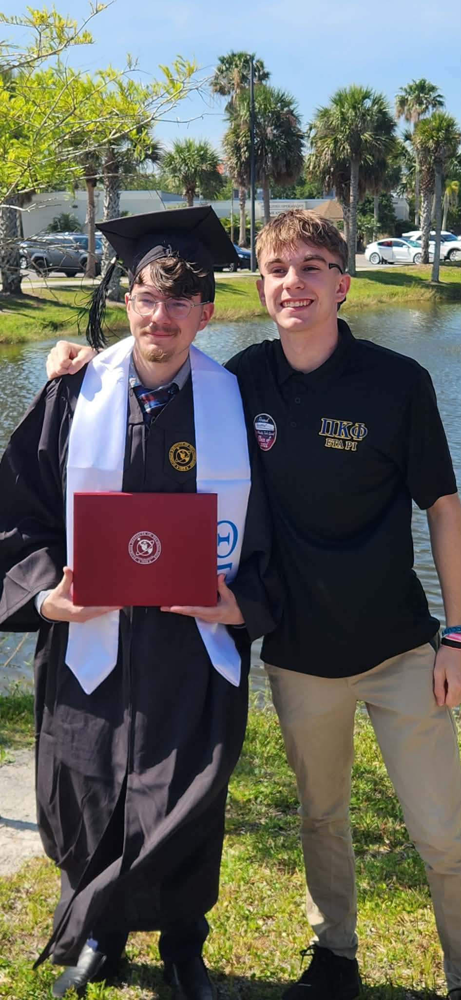

Oct 2023 – May 2026
Esports Technician
FIT Esports Center
Managed 60 computers using daily checklists, troubleshot hardware/software issues, and supported livestream operations.
Computer Science Graduate · Software Developer · U.S. Citizen
I’m Joseph Hilte, a Computer Science graduate from Florida Institute of Technology with hands-on experience in software engineering, Android development, debugging, software testing, cybersecurity leadership, and team-based technical projects. I enjoy solving practical problems, improving system quality, and building applications that are reliable, maintainable, and useful for real users.
About Me
My background combines software development, testing, and leadership. Through academic projects and professional experience, I have developed the ability to learn quickly, communicate clearly, and deliver results as part of a team.
At Project Jumpstart, I improved long-term code maintainability through systematic debugging, refactoring, and enhanced test coverage. I also helped coordinate an 8-person team so project milestones were completed on schedule.
I’m excited to contribute to a forward-thinking team where I can continue growing as a developer while building reliable, user-focused software.

Major projects completed
Team members coordinated at Project Jumpstart
Cybersecurity team competition placement
Reduction in codebase bugs
Work History
Oct 2023 – May 2026
FIT Esports Center
Managed 60 computers using daily checklists, troubleshot hardware/software issues, and supported livestream operations.
Aug 2022 – May 2024
Project Jumpstart
Improved code quality by debugging, refactoring legacy modules, enhancing test coverage, and coordinating an 8-person team.
Aug 2022 – Dec 2022
FIT Cybersecurity Team
Led weekly meetings, assigned tasks, and helped guide the team to a top 5 placement in a club competition.
Selected Work
Kotlin · Firebase · Google Maps · GitHub · Jira
Led a 4-person team in building an Android app that supports student, driver, and manager roles for campus shuttle coordination.
Python · PyQt5 · JSON
Built a searchable, paginated GUI recipe application with image integration, search/reset features, and detailed recipe views.
Python · Minimax · Alpha-Beta Pruning
Developed an interactive Othello game with AI decision-making, undo, turn-skipping, scoring, and full rule enforcement.
Leadership
Vice President · 2024 – 2025
Treasurer · 2024 – 2025
Cyber Team Captain · 2022
Technical Toolkit
Python, Java, Kotlin, C++, C, Go, Assembly
Git, GitHub, Jira, VS Code, Android Studio
SQL, REST APIs, Firebase
Data Structures, Algorithms, OOP, Debugging, Software Testing
Get in Touch
Interested in software development, software testing, Android development, and technical team roles.